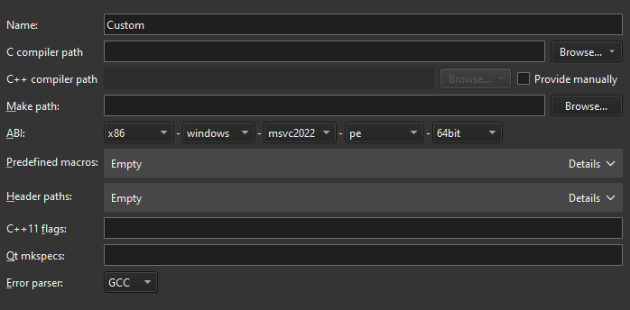

Add custom compilers
To add a compiler that is not listed Preferences > Kits > Compilers or to add a remote compiler, use the Custom option. Specify the paths to the directories where the compiler and make tool are located and set preferences for the compiler.

To add other compilers:
- Select Preferences > Kits > Compilers > Add > Custom.
- In Name, enter a name for the compiler.
- In C compiler path, enter the path to the directory where the C compiler is located.
Select Remote in the dropdown menu in Browse (Choose on macOS) to add the path to the compiler on a remote Linux device or in Docker.
- In C++ compiler path, select Provide manually to enter the path to the directory where the C++ compiler is located.
Select Remote to add the path to the compiler on a remote Linux device or in Docker.
- In Make path, enter the path to the directory where the make tool is located.
- In ABI, specify the ABI version.
- In Predefined macros, specify the macros that the compiler enables by default. Specify each macro on a separate line, in the following format: MACRO[=value].
- In Header paths, specify the paths to directories that the compiler checks for headers. Specify each path on a separate line.
- In C++11 flags, specify the flags that turn on C++11 support in the compiler.
- In Qt mkspecs, specify the path to the directory where mkspecs are located. Usually, the path is specified relative to the Qt mkspecs directory.
- In Error parser, select the error parser to use. You can add custom output parsers to the list. Select Custom Parser Settings to view and edit their preferences.
See also Add compilers, Add Nim compilers, Compilers, and Add custom output parsers.